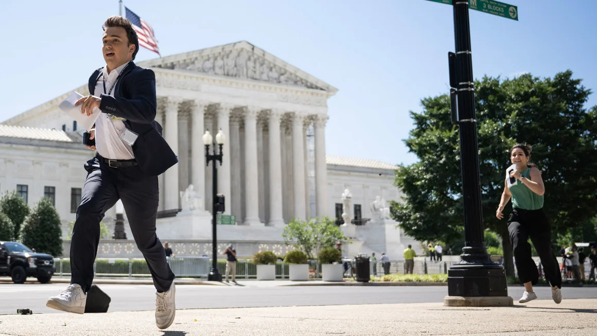

Supreme Court returns to work with an eye on post-election drama
By John Fritze, CNN
Updated 3:50 PM EDT, Sun October 6, 2024
CNN - The Supreme Court returns to its bench Monday
with an agenda that includes cases on guns, pornography and
transgender medical care, as the justices brace for a slew of
last-minute election fights and a new presidential administration
that could drag the court deeper into politics.

A contested election between Vice President Kamala Harris and former
President Donald Trump could thrust the 6-3 conservative majority
into a political maelstrom at a moment when polls show trust in the
court near record lows. A new president could reshuffle the cases
already granted. And Trump is all but guaranteed to resurface at the
Supreme Court in coming weeks to clarify the sweeping criminal
immunity the court bestowed on him in July.
All of that will be on the minds of the nine justices when they take
their seats Monday for their first oral arguments of a new term that
will run until next summer.
“As matters stand now, this feels like the court is keeping its
powder dry in case the election explodes,” Carter Phillips, a
veteran Supreme Court litigator, told CNN early last week. “Not a
lot of cases and very few high-profile ones.”
Guns, pornography make SCOTUS docket
On Tuesday, the court will hear arguments in one of its biggest
pending disputes. Advocacy groups and manufacturers are challenging
a Biden administration regulation on “ghost guns,” mail-order kits
that allow people to build untraceable weapons at home.
Though important – police say the guns are showing up at crime
scenes – the suit doesn’t implicate the Second Amendment. Instead,
the case deals with whether the Bureau of Alcohol, Tobacco, Firearms
and Explosives exceeded its authority when it decided in 2022 that
the kits counted as firearms that could be regulated.
A Louisiana-based appeals court ruled last year that the ATF
overstepped its authority, and the Biden administration appealed in
February. Later this year or early next, the court will hear
arguments in a First Amendment case from the adult entertainment
industry challenging a Texas law mandating age-verification
requirements for pornographic websites.
On Friday, the court added another 13 cases to its lineup, though it
remained silent about other major pending cases dealing with
religion and abortion. The justices agreed to decide whether a
federal law prevents Mexico from suing gun distributors for
allegedly facilitating the flow of firearms to drug cartels. And
they took a case from a straight woman who claims she faced
workplace discrimination from a gay boss.
The relatively low-key term stands in contrast with previous years,
when the conservative majority overturned Roe v. Wade, expanded
Second Amendment rights, ended affirmative action in college
admissions and – earlier this year – found far-reaching criminal
immunity for Trump.
Roberts under pressure as election looms
Given those pressures, Roberts and his colleagues would likely
prefer to avoid getting sucked into messy election battles this
year. Twenty-four years ago, a different court led by Chief Justice
William Rehnquist handed down a hastily crafted 5-4 ruling in Bush
v. Gore that effectively decided the presidential election for
former President George W. Bush. The late Justice Sandra Day
O’Connor, who was instrumental in that decision, later regretted the
court’s involvement.
“This court has to understand that its institutional legitimacy has
been challenged,” David Cole, national legal director at the ACLU,
said during a recent panel organized by Georgetown Law. “For it to
get involved in a close election and vote on party lines to decide
who the president is would be a disaster.”
Republican and Democratic attorneys have already filed a
flurry of pre-election lawsuits, some which could be used in
November to challenge the result of the election. But it’s also
possible that whatever major election fight makes its way up to the
high court next month, assuming one does, will come at breakneck
speed and without much warning.
“It’s impossible to predict how much election litigation there will
be and what it might look like,” Kannon Shanmugam, an attorney who
has argued dozens of cases at the high court, told CNN. “At this
point in 2000, no one saw Bush v. Gore coming.”
A parade of new high-profile legal controversies will continue to
move through federal courts even after the next president is
inaugurated. New administrations often seek to make quick, dramatic
policy changes through executive action that can lead to rapid
appeals. Take, for instance, Trump’s ban on travel from
predominately Muslim nations, which made repeat trips to the Supreme
Court.
Jackson: Court is ready for surprises
A change in presidential administration can also affect the cases
already sitting on the high court’s docket. One of the court’s most
closely watched cases this term, involving the politically fraught
issue of gender-affirming care, may be particularly vulnerable if
Trump wins election. The Supreme Court agreed in June to take up a
Biden administration challenge to a transgender care ban in
Tennessee, which prohibits hormone therapy and puberty blockers for
minors and imposes civil penalties for doctors who violate the
prohibitions.
Nearly half of US states have enacted bans on transgender care for
minors, according to the Human Rights Campaign.
Though the case also involves private parties, a change in
position on transgender issues from a new Justice Department could
nevertheless complicate that appeal, which has not yet been
scheduled for argument.
The Supreme Court has already dipped into next month’s election in a
few emergency cases, two of which involved third-party candidates
trying to remain on state presidential ballots.
In a more significant decision in August, the court blocked part of
Arizona’s proof-of-citizenship requirements for voters but let stand
a requirement that would-be voters document their citizenship before
registering to vote on a state form.
Speaking to CBS News in August, Justice Ketanji Brown Jackson
flashed a smile when asked if she was prepared for the election to
arrive as an issue for the Supreme Court.
“As prepared,” she said, “as anyone can be.”